위험물산업기사 (2017-05-07 기출문제)
1과목: 일반화학
1. 산성 산화물에 해당하는 것은?
- CaO
- Na2O
- CO2
- MgO
(정답률: 86%)

2. 다음 화합물의 0.1mol 수용액 중에서 가장 약한 산성을 나타내는 것은?
- H2SO4
- HCl
- CH3COOH
- HNO3
(정답률: 67%)
3. 다음 반응식에서 브뢴스테드의 산ㆍ염기 개념으로 볼 때 산에 해당하는 것은?
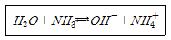
- NH3 와 NH4+
- NH3 와 OH-
- H2O 와 OH-
- H2O 와 NH4+
(정답률: 64%)
4. 같은 몰 농도에서 비전해질 용액은 전해질 용액보다 비등점 상승도의 변화추이가 어떠한가?
- 크다.
- 작다.
- 같다.
- 전해질 여부와 무관하다.
(정답률: 75%)
5. 다음 화학반응식 중 실제로 반응이 오른쪽으로 진행되는 것은?
- 2KI + F2 →2KF + I2
- 2KBr + I2 → 2KI + Br2
- 2KF + Br2 → 2KBr + F2
- 2KCl + Br2 → 2KBr + Cl2
(정답률: 71%)
6. 나일론(Nylon 6, 6)에는 다음 어느 결합이 들어 있는가?
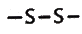
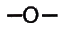
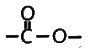
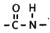
(정답률: 82%)
7. 0.1N KMnO4 용액 500mL 를 만들려면 KMnO4 몇 g 이 필요한가? (단, 원자량은 K : 39, Mn : 55, O : 16 이다.) (문제 오류로 실제 시험에서는 모두 정답처리 되었습니다. 여기서는 2번을 누르면 정답 처리 됩니다.)
- 15.8g
- 7.9g
- 1.58g
- 0.89g
(정답률: 80%)
8. 황산구리 수용액을 Pt 전극을 써서 전기분해하여 음극에서 63.5g의 구리를 얻고자 한다. 10A 의 전류를 약 몇 시간 흐르게 하여야 하는가? (단, 구리의 원자량은 63.5 이다.)
- 2.36
- 5.36
- 8.16
- 9.16
(정답률: 71%)
9. 물 2.5L 중에 어떤 불순물이 10mg 함유되어 있다면 약 몇 ppm 으로 나타낼 수 있는가?
- 0.4
- 1
- 4
- 40
(정답률: 69%)
10. 표준 상태에서 기체 A 1L의 무게는 1.964g 이다. A의 분자량은?
- 44
- 16
- 4
- 2
(정답률: 69%)
11. C3H8 22.0g 을 완전연소 시켰을 때 필요한 공기의 부피는 약 얼마인가? (단, 0℃, 1기압 기준이며, 공기 중의 산소량은 21% 이다.)
- 56L
- 112L
- 224L
- 267L
(정답률: 55%)
12. 화약제조에 사용되는 물질인 질산칼륨에서 N의 산화수는 얼마인가?
- +1
- +3
- +5
- +7
(정답률: 77%)
13. 이온결합 물질의 일반적인 성질에 관한 설명 중 틀린 것은?
- 녹는점이 비교적 높다.
- 단단하며 부스러지기 쉽다.
- 고체와 액체 상태에서 모두 도체이다.
- 물과 같은 극성용매에 용해되기 쉽다.
(정답률: 78%)
14. 전형 원소 내에서 원소의 화학적 성질이 비슷한 것은?
- 원소의 족이 같은 경우
- 원소의 주기가 같은 경우
- 원자 번호가 비슷한 경우
- 원자의 전자수가 같은 경우
(정답률: 81%)
15. 볼타 전지에 관한 설명으로 틀린 것은?
- 이온화 경향이 큰 쪽의 물질이 (-)극이다.
- (+)극에서는 방전 산화 반응이 일어난다.
- 전자는 도선을 따라 (-)극에서 (+)극으로 이동한다.
- 전류의 방향은 전자의 이동 방향과 반대이다.
(정답률: 64%)
16. 탄소와 모래를 전기로에 넣어서 가열하면 연마제로 쓰이는 물질이 생성된다. 이에 해당하는 것은?
- 카보런덤
- 카바이드
- 카본블랙
- 규소
(정답률: 72%)
17. 어떤 금속 1.0g 을 묽은 황산에 넣었더니 표준상태에서 560 mL의 수소가 발생하였다. 이 금속의 원자가는 얼마인가? (단, 금속의 원자량은 40 으로 가정한다.)
- 1가
- 2가
- 3가
- 4가
(정답률: 72%)
18. 불꽃 반응 시 보라색을 나타내는 금속은?
- LI
- K
- Na
- Ba
(정답률: 84%)
19. 다음 화학식의 IUPAC 명명법에 따른 올바른 명명법은?
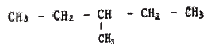
- 3 - 메틸펜탄
- 2, 3, 5 - 트리메틸 헥산
- 이소부탄
- 1, 4 - 헥산
(정답률: 74%)
20. 주기율표에서 원소를 차례대로 나열할 때 기준이 되는 것은?
- 원자의 부피
- 원자핵의 양성자수
- 원자가 전자수
- 원자 반지름이 크기
(정답률: 70%)
2과목: 화재예방과 소화방법
21. 포소화약제의 혼합 방식 중 포원액을 송수관에 압입하기 위하여 포원액용 펌프를 별도로 설치하여 혼합하는 방식은?
- 라인 프로포셔너 방식
- 프레져 프로포셔너 방식
- 펌프 프로포셔너 방식
- 프레져 사이드 프로포셔너 방식
(정답률: 67%)
22. 할로겐화합물 소화약제의 조건으로 옳은 것은?
- 비점이 높을 것
- 기화되기 쉬울 것
- 공기보다 가벼울 것
- 연소성이 좋을 것
(정답률: 56%)
23. 자연발화가 일어나는 물질과 대표적인 에너지원의 관계로 옳지 않은 것은?
- 셀룰로이드 - 흡착열에 의한 발열
- 활성탄 - 흡착열에 의한 발열
- 퇴비 - 미생물에 의한 발열
- 먼지 - 미생물에 의한 발열
(정답률: 75%)
24. 소화기와 주된 소화효과가 옳게 짝지어진 것은?
- 포 소화기 - 제거소화
- 할로겐화합물 소화기 - 냉각소화
- 탄산가스소화기 - 억제소화
- 분말 소화기 - 질식소화
(정답률: 85%)
25. 위험물안전관리법령상 물분무등소화설비에 포함되지 않는 것은?
- 포소화설비
- 분말소화설비
- 스프링클러설비
- 불활성가스소화설비
(정답률: 66%)
26. 위험물에 화재가 발생하였을 경우 물과의 반응으로 인해 주수소화가 적당하지 않은 것은?
- CH3ONO2
- KClO3
- Li2O2
- P
(정답률: 61%)
27. 과염소산 1몰을 모두 기체로 변화하였을 때 질량은 1기압, 50℃를 기준으로 몇 g 인가? (단, Cl 의 원자량은 35.5 이다.)
- 5.4
- 22.4
- 100.5
- 224
(정답률: 63%)
28. 다음에서 설명하는 소화약제에 해당하는 것은?
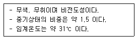
- 탄산수소나트륨
- 이산화탄소
- 할론 1301
- 황산알루미늄
(정답률: 77%)
29. 자연발화에 영향을 주는 인자로 가장 거리가 먼 것은?
- 수분
- 증발열
- 발열량
- 열전도율
(정답률: 76%)
30. 위험물안전관리법령상 소화설비의 적응성에서 이산화탄소소화기가 적응성이 있는 것은?
- 제1류 위험물
- 제3류 위험물
- 제4류 위험물
- 제5류 위험물
(정답률: 59%)
31. 경보 설비는 지정 수량 몇 배 이상의 위험물을 저장, 취급하는 제조소등에 설치하는가?
- 2
- 4
- 8
- 10
(정답률: 79%)
32. 탄화칼슘 60000kg 을 소요단위로 산정하면?
- 10단위
- 20단위
- 30단위
- 40단위
(정답률: 76%)
33. 고체의 일반적인 연소형태에 속하지 않는 것은?
- 표면연소
- 확산연소
- 자기연소
- 증발연소
(정답률: 79%)
34. 주된 연소형태가 표면연소인 것은?
- 황
- 종이
- 금속분
- 니트로셀룰로오스
(정답률: 64%)
35. 위험물의 화재위험에 대한 설명으로 옳은 것은?
- 인화점이 높을수록 위험하다.
- 착화점이 높을수록 위험하다.
- 착화에너지가 작을수록 위험하다.
- 연소열이 작을수록 위험하다.
(정답률: 75%)
36. 외벽이 내화구조인 위험물저장소 건축물의 연면적이 1500m2 인 경우 소요단위는?
- 6
- 10
- 13
- 14
(정답률: 84%)
37. 중유의 주된 연소 형태는?
- 표면연소
- 분해연소
- 증발연소
- 자기연소
(정답률: 55%)
38. 제5류 위험물의 화재 시 일반적인 조치사항으로 알맞은 것은?
- 분말소화약제를 이용한 질식소화가 효과적이다.
- 할로겐화합물 소화약제를 이용한 냉각소화가 효과적이다.
- 이산화탄소를 이용한 질식소화가 효과적이다.
- 다량의 주수에 의한 냉각소화가 효과적이다.
(정답률: 75%)
39. Halon 1301에 해당하는 화학식은?
- CH3Br
- CF3Br
- CBr3F
- CH3Cl
(정답률: 83%)
40. 소화약제의 열분해 반응식으로 옳은 것은?
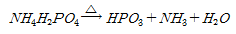
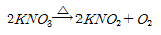
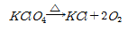
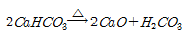
(정답률: 75%)
3과목: 위험물의 성질과 취급
41. 금속칼륨 20kg, 금속나트륨 40kg, 탄화칼슘 600kg 각각의 지정수량 배수의 총합은 얼마인가?
- 2
- 4
- 6
- 8
(정답률: 63%)
42. 다음 중 C5H5N 에 대한 설명으로 틀린 것은?
- 순수한 것은 무색이고 악취가 나는 액체이다.
- 상온에서 인화의 위험이 있다.
- 물에 녹는다.
- 강한 산성을 나타낸다.
(정답률: 53%)
43. 물에 녹지 않고 물보다 무거우므로 안전한 저장을 위해 물 속에 저장하는 것은?
- 디에틸에테르
- 아세트알데히드
- 산화프로필렌
- 이황화탄소
(정답률: 76%)
44. 알루미늄의 연소생성물을 옳게 나타낸 것은?(오류 신고가 접수된 문제입니다. 반드시 정답과 해설을 확인하시기 바랍니다.)
- Al2O3
- Al(OH)3
- Al2O3, H2O
- Al(OH)3, H2O
(정답률: 57%)
45. 다음 물질을 적셔서 얻은 헝겊을 대량으로 쌓아 두었을 경우 자연발화의 위험성이 가장 큰 것은?
- 아마인유
- 땅콩기름
- 야자유
- 올리브유
(정답률: 84%)
46. 염소산나트륨이 열분해하였을 때 발생하는 기체는?
- 나트륨
- 염화수소
- 염소
- 산소
(정답률: 65%)
47. 트리니트로페놀의 성질에 대한 설명 중 틀린 것은?
- 폭발에 대비하여 철, 구리로 만든 용기에 저장한다.
- 휘황색을 띤 침상결정이다.
- 비중이 약 1.8로 물보다 무겁다.
- 단독으로는 테트릴보다 충격, 마찰에 둔감한 편이다.
(정답률: 79%)
48. [그림]과 같은 위험물을 저장하는 탱크의 내용적은 약 몇 m3 인가? (단, r은 10m, L은 25m 이다.)
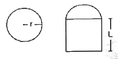
- 3612
- 4754
- 5812
- 7854
(정답률: 75%)
49. 충격 마찰에 예민하고 폭발 위력이 큰 물질로 뇌관의 첨장약으로 사용되는 것은?
- 니트로글리콜
- 니트로셀룰로오스
- 테트릴
- 질산메틸
(정답률: 55%)
50. 다음은 위험물안전관리법령상 제조소등에서의 위험물의 저장 및 취급에 관한 기준 중 저장 기준의 일부이다. ( )안에 알맞은 것은?
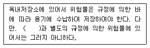
- 동식물유류
- 덩어리 상태의 유황
- 고체 상태의 알코올
- 고화된 제4석유류
(정답률: 81%)
51. 메틸에틸케톤의 저장 또는 취급시 유의할 점으로 가장 거리가 먼 것은?
- 통풍을 잘 시킬 것
- 찬곳에 저장할 것
- 직사일광을 피할 것
- 저장 용기에는 증기 배출을 위해 구멍을 설치할 것
(정답률: 75%)
52. 과산화수소의 성질 또는 취급방법에 관한 설명 중 틀린 것은?
- 햇빛에 의하여 분해한다.
- 인산, 요산 등의 분해방지 안정제를 넣는다.
- 공기와의 접촉은 위험하므로 저장용기는 밀전(密栓)하여야 한다.
- 에탄올에 녹는다.
(정답률: 77%)
53. 마그네슘리본에 불을 붙여 이산화탄소 기체속에 넣었을 때 일어나는 현상은?
- 즉시 소화된다.
- 연소를 지속하며 유독성의 기체를 발생한다.
- 연소를 지속하며 수소 기체를 발생한다.
- 산소를 발생하며 서서히 소화된다.
(정답률: 59%)
54. 금속나트륨에 대한 설명으로 옳은 것은?(오류 신고가 접수된 문제입니다. 반드시 정답과 해설을 확인하시기 바랍니다.)
- 청색 불꽃을 내며 연소한다.
- 경도가 높은 중금속에 해당한다.
- 녹는점이 100℃ 보다 낮다.
- 25%이상의 알코올수용액에 저장한다.
(정답률: 57%)
55. 염소산칼륨의 성질에 대한 설명 중 옳지 않은 것은?
- 비중은 약 2.3 으로 물보다 무겁다.
- 강산과의 접촉은 위험하다.
- 열분해 하면 산소와 염화칼륨이 생성된다.
- 냉수에도 매우 잘 녹는다.
(정답률: 70%)
56. 위험물안전관리법령상 유별을 달리하는 위험물의 혼재기준에서 제6류 위험물과 혼재할 수 있는 위험물의 유별에 해당하는 것은? (단, 지정수량의 1/10 을 초과하는 경우이다.)
- 제1류
- 제2류
- 제3류
- 제4류
(정답률: 84%)
57. 자기반응성물질의 일반적인 성질로 옳지 않은 것은?
- 강산류와의 접촉은 위험하다.
- 연소속도가 대단히 빨라서 폭발이 있다.
- 물질자체가 산소를 함유하고 있어 내부연소를 일으키기 쉽다.
- 물과 격렬하게 반응하여 폭발성가스를 발생한다.
(정답률: 67%)
58. 다음 중 에틸알코올의 인화점(℃)에 가장 가까운 것은?
- -4℃
- 3℃
- 13℃
- 27℃
(정답률: 65%)
59. 자연발화를 방지하는 방법으로 가장 거리가 먼 것은?
- 통풍이 잘되게 할 것
- 열의 축적을 용이하지 않게 할 것
- 저장실의 온도를 낮게 할 것
- 습도를 높게 할 것
(정답률: 74%)
60. 다음 중 일반적인 연소의 형태가 나머지 셋과 다른 하나는?
- 나프탈렌
- 코크스
- 양초
- 유황
(정답률: 68%)